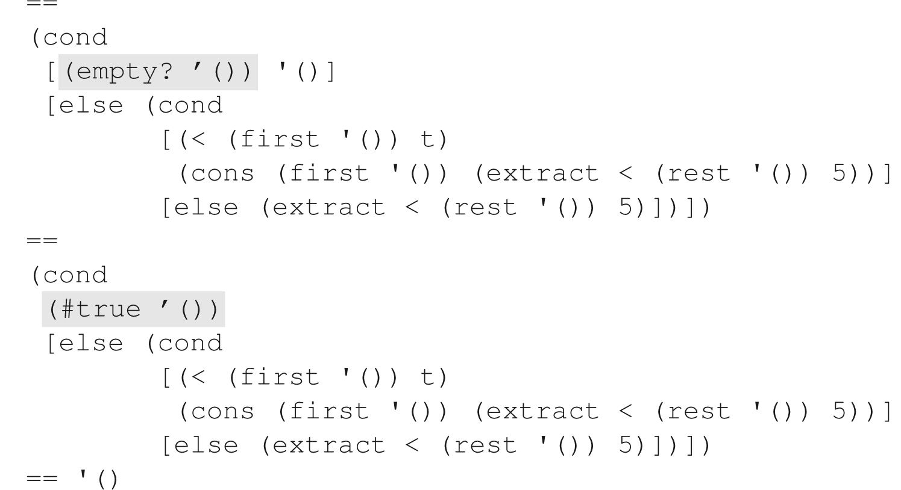
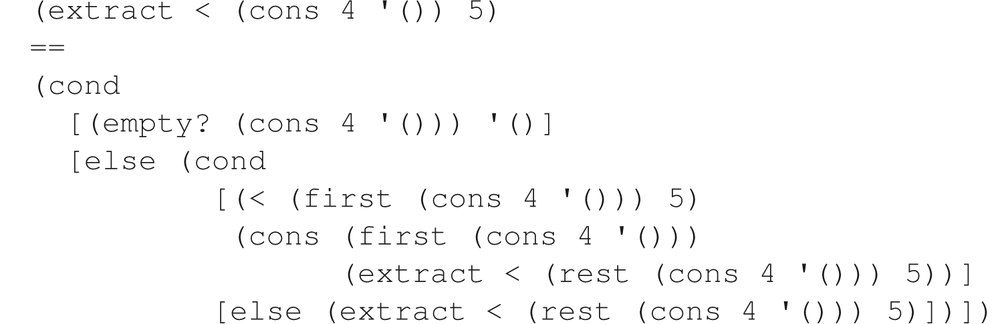
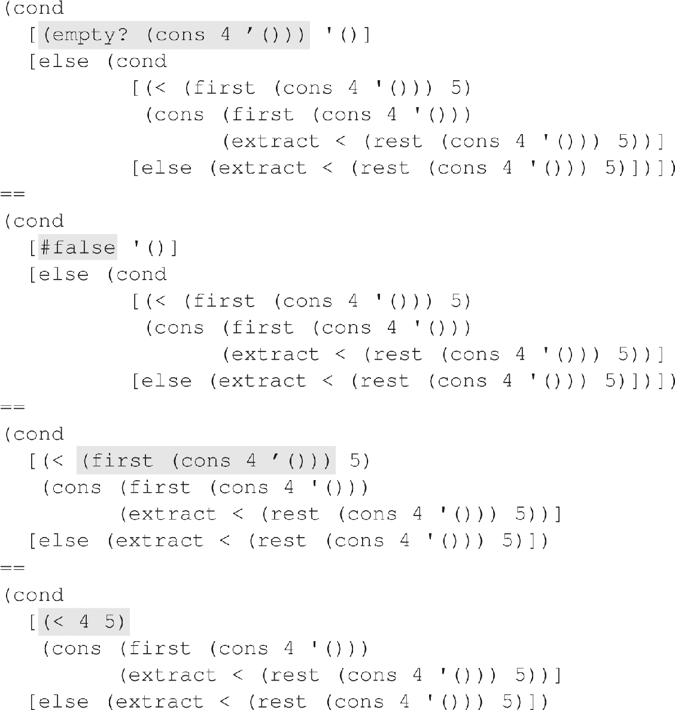
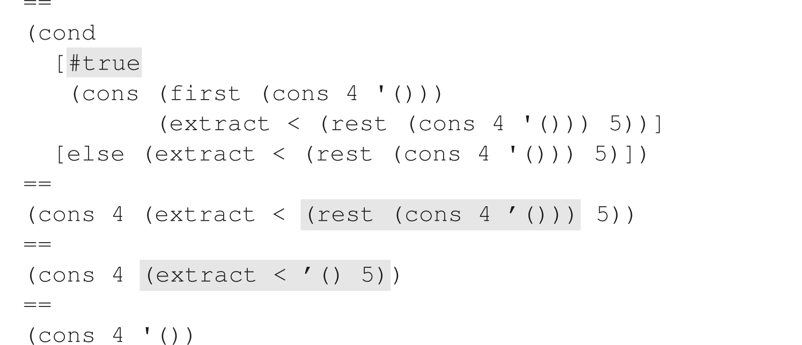
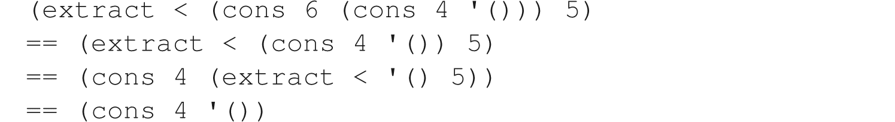
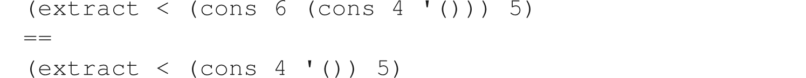
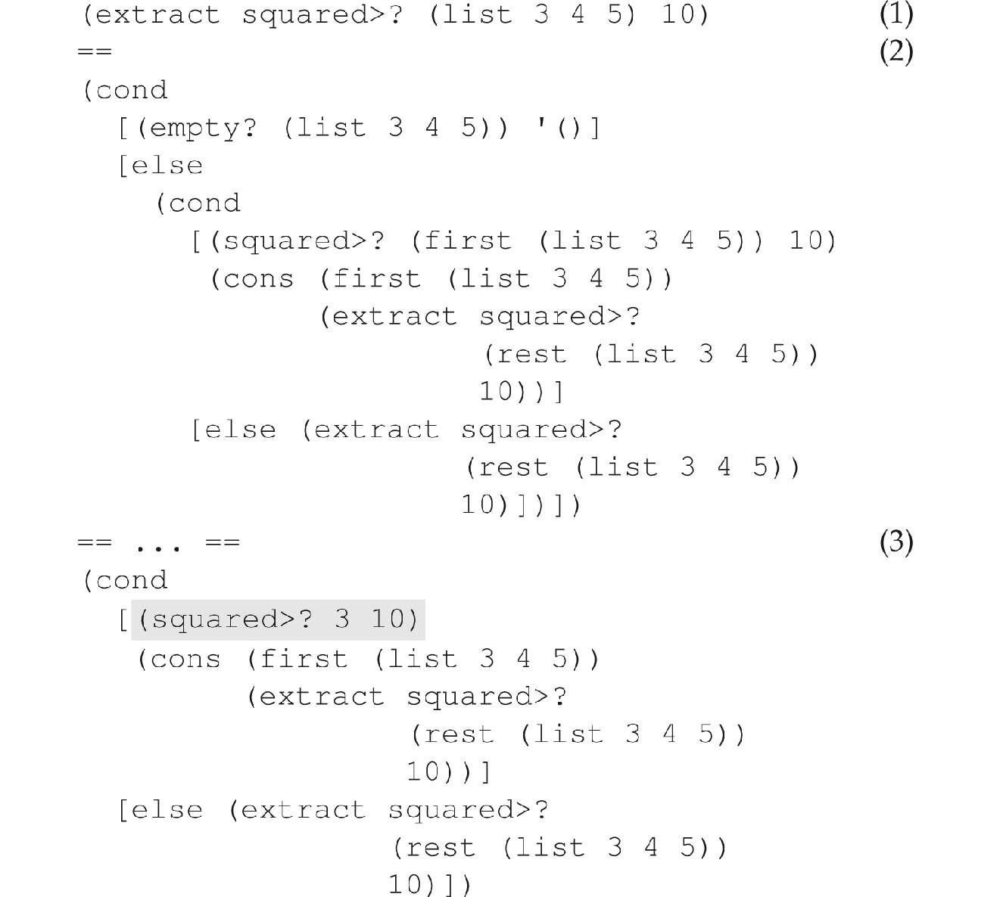

14.5 Computing with Functions
The switch from BSL+ to ISL allows the use of functions as arguments and the use of names in the first position of an application. DrRacket deals with names in these positions like anywhere else, but naturally, it expects a function as a result. Surprisingly, a simple adaptation of the laws of algebra suffices to evaluate programs in ISL.
Let’s see how this works for extract from chapter 14.2. Obviously,
(extract < '() 5) == '()
holds. We can use the law of substitution from intermezzo 1 and continue computing with the body of the function. Like so many times, the parameters, R, l, and t, are replaced by their arguments, <, '(), and 5, respectively. From here, it is plain arithmetic, starting with the conditionals:

Next we look at a one-item list:
(extract < (cons 4 '()) 5)
The result should be (cons 4 '()) because the only item of this list is 4 and (< 4 5) is true. Here is the first step of the evaluation:

Again, all occurrences of R are replaced by <, l by (cons 4 '()), and t by 5. The rest is straightforward:

This is the key step, with < used after being substituted into this position. And it continues with arithmetic:

The last step is the equation from above, meaning we can apply the law of substituting equals for equals.
Our final example is an application of extract to a list of two items:

Step 1 is new. It deals with the case that extract eliminates the first item on the list if it is not below the threshold.
Exercise 246. Check step 1 of the last calculation

using DrRacket’s stepper. 
Exercise 247. Evaluate (extract < (cons 8 (cons 4 '())) 5) with DrRacket’s stepper.
Exercise 248. Evaluate (squared>? 3 10) and (squared>? 4 10) in DrRacket’s stepper.
Consider this interaction:
> (extract squared>? (list 3 4 5) 10)
(list 4 5)
Here are some steps as the stepper would show them:

Use the stepper to confirm the step from lines (1) to (2). Continue the stepping to fill in the gaps between steps (2) and (3). Explain each step as the use of a law.
Exercise 249. Functions are values: arguments, results, items in lists. Place the following definitions and expressions into DrRacket’s definitions window and use the stepper to find out how running this program works:
(define (f x) x)
(cons f '())
(f f)
(cons f (cons 10 (cons (f 10) '())))
The stepper displays functions as lambda expressions; see chapter 17.